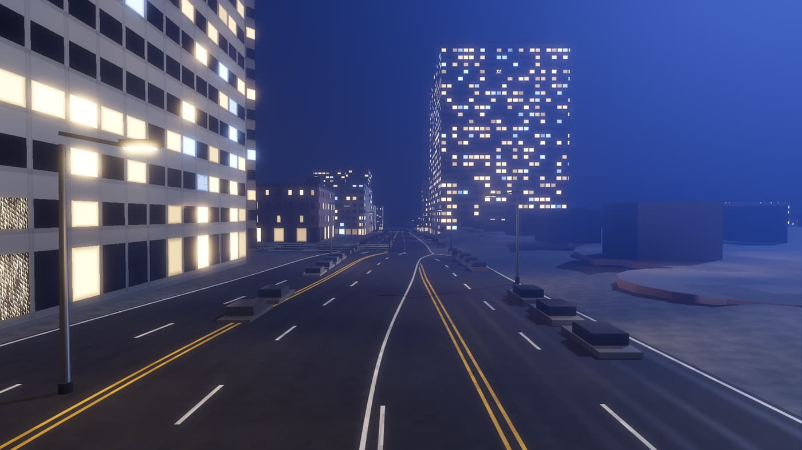
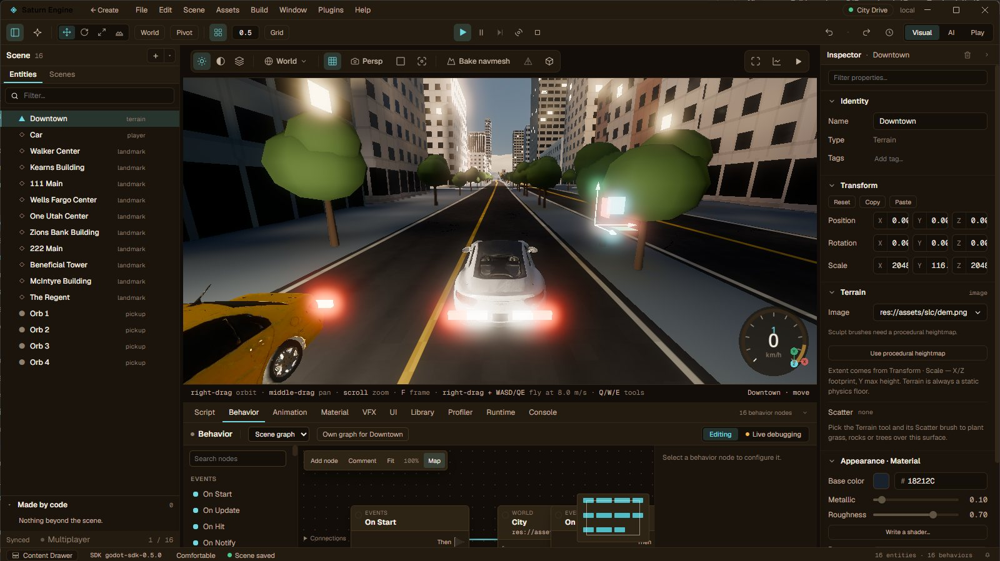
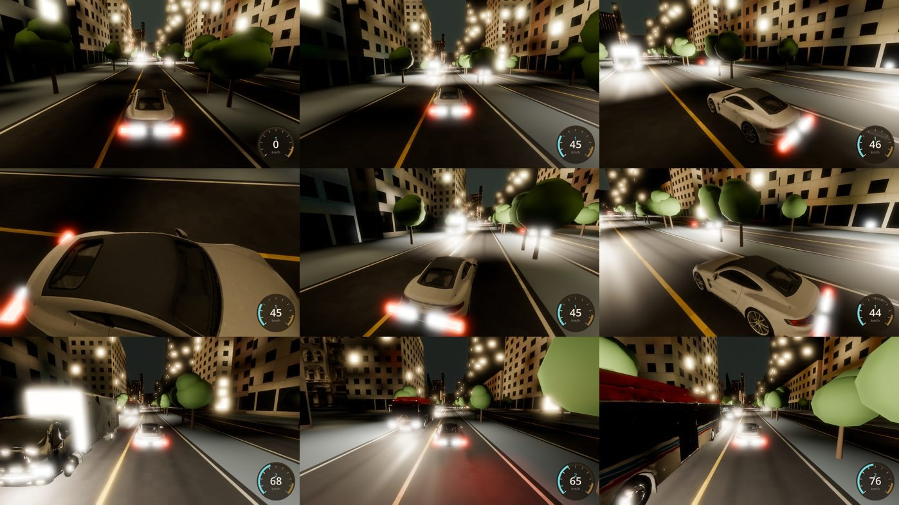
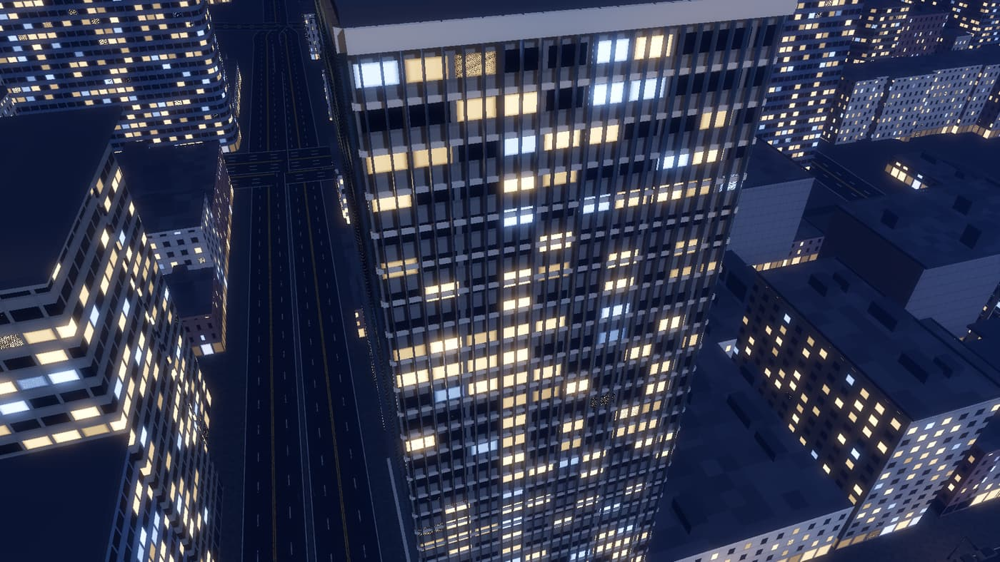

Windows desktop editor · native Godot 4 runtime
Describe a game. Watch it run. Ship the .exe.
This is an empty scene. A Vulkan context, a physics tick, and nothing in it. Everything past this screen is Saturn: the gate an ask goes through, a game running in its viewport, and what it finds wrong.

The ask
One sentence. Then six things happen to it.
- you“make it night, with traffic on Main Street”prompt
- planshows the change before making itfirst
- generateGDScript against the pinned SDKClaude
- dry runparsed and type-checked before anything runsgated
- runhot-applied to the live process, no reloadlive
- checkpointkept. one click rolls scene and script back togethersaved
The city · in the viewport
It is already running.
Not a render. Not a preview. A native Godot 4 process, reparented into the editor viewport, on the engine your finished build ships on.
- city_drive.gd
- 60 fps
- Forward+
- SDFGI
- Godot physics
The instrument
Everything it does, it does in one window.

- One engine process, reparented into the viewport. Vulkan Forward+, SDFGI and the real physics tick are all on while you author.
- Chat, scene tree, inspector and graphs compile to one source. The same versioned SDK. Readable GDScript you can hand-edit. Nothing behind a black box.
- Everything a game actually needs. Audio buses, in-game UI, terrain and navmesh, gameplay AI, VFX, save, input, authoritative multiplayer, a frame profiler.
- It exports a binary you own. A native Windows or Linux build with a press kit beside it. No store in between, no split, no runtime account. (Install Godot’s free 4.7.1 export templates once.)

The look
Then it goes and looks at it.
Saturn’s playtest drives the running game and takes the shots; its look check flags what is wrong. These notes are from this run.
- keepTraffic reads at speedBuses, vans and cars hold their lanes on the real streets at 100 km/h.
- fixOrb 1 floats over Main StreetFound by the look check: a pickup 4.2 m up, with nothing under it.
- keepWarm windows, dark streetThe lit facades carry the night and the road stays readable.
- fixTail lights bloom wideStopped, the brake lights wash over the whole rear of the car.
- fixTrees read flat at nightThe street trees stay a bright, even green under orange lamps.

The ship
It leaves as a file you own.
A native Windows build with a press kit written beside it. Put it on Steam or Itch yourself. No store in between, no revenue split, no runtime account.
Download for Windows What it doesn’t do
Free while in beta · Windows 10/11, 64-bit · Vulkan-capable GPU
Honest scope
What it doesn’t do, before you install it.
Yes
- Windows editor and native export, to Windows and Linux. Exporting needs Godot’s free 4.7.1 export templates, installed once.
- AI that writes readable GDScript, gated before it runs, checkpointed after.
- Full visual authoring — scene, inspector, graphs, terrain, navmesh, profiler.
- Authoritative multiplayer with a real server tick, not a peer hack.
- Two people on one game, through a shared folder and GitHub. The guide.
No
- No AI of its own. The AI runs on your Claude: a Claude subscription through Claude Code, or an Anthropic API key. The rest of the editor works without either.
- No asset marketplace. Bring your own, or generate them in place.
- No from-scratch renderer. Godot’s is better than one we would write.
- No shareable web link. A game here is a binary; the web runtime was retired on purpose.
- No macOS or Linux editor yet, and no console export. Deferred, not excluded.
- No code-signing certificate yet. Windows SmartScreen warns on first run; you get past it with More info › Run anyway.
- 1engine process, reparented into the editor viewport
- 0lines you have to write before it runs
- 100%GDScript out — readable, yours, hand-editable
- .exewhat ships: a native Windows build you own